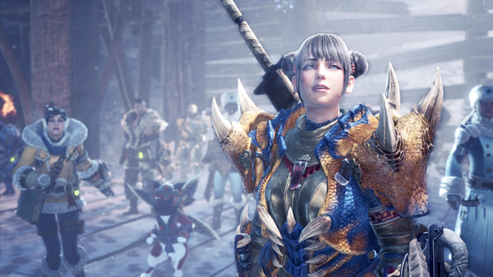
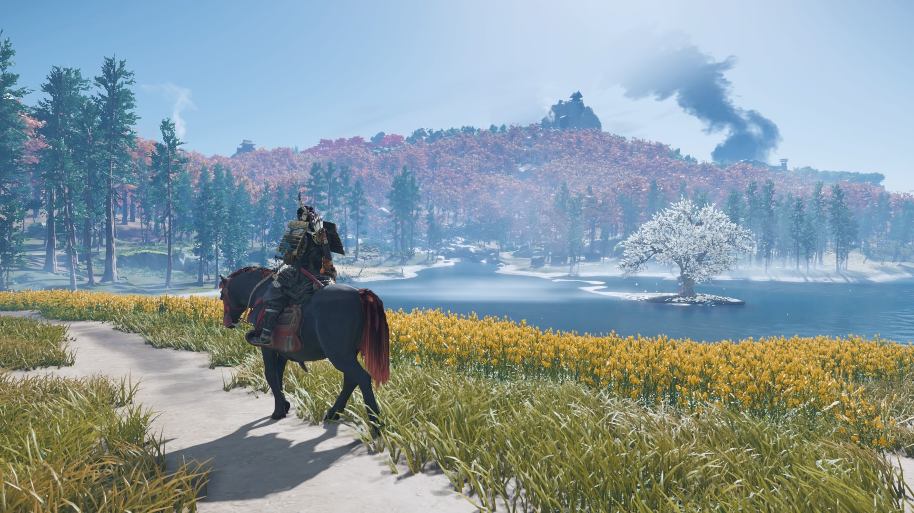

Gaming has become a large influence on modern media and has developed some major titles in recent years. Here are some games I recommend to people who want to get into certain genres of gaming or new to gaming.
Elden Ring is one of the most in depth open world games ever made. Fromsoft, the developers of games like Dark Souls, has managed to combine elements of a souls-like experience and immersion through world building and exploration. Although most would say it's on of the easier games in the series, this title alone managed to become Fromsoft's best selling game and get players who weren't familiar with the Souls Series to become interested in playing the other games they made prior to this release. Definitely a must to play.
Monster Hunter World (Iceborne) is an RPG that has managed to build a huge following over the years as its long running series of games managed to get people interested in its core concept of hunting monsters and gathering their materials to fight bigger and stonger monsters. The 2016 release reinvented the series as you not only fight these monsters, but their ecology and overall role in the ecosystem managed to pursuade people as if it were a living and breathing world. If you want a lot of action, world immersion, beautiful graphics, and intense gameplay, this game is for you. Join the hunt.